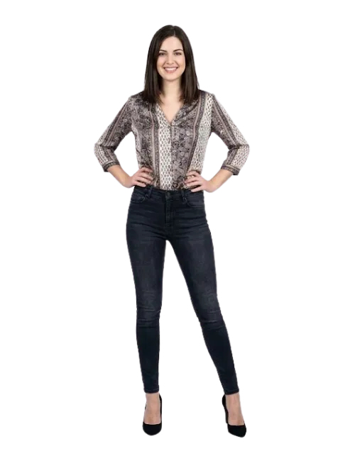

Custom Private Label & Bulk Supply Solutions for Global Fashion Brands
Tech packs define rise, waist/hip/thigh/knee/ankle measurements, inseam, pocket depth, button/rivet spec, recovery targets, and shrink allowances. Fit and recovery tests in 10-12 days.
Fabric: 73% cotton / 25% polyester / 2% elastane 10oz denim (300 GSM) for stretch and recovery.
Fit: Tapered from waist to ankle; mid-rise; skinny leg opening tuned for tightness tolerance.
Construction: Five-pocket configuration; reinforced rivet placement; YKK button; topstitched seams.
Finishing: Stretch recovery wash; shrink control; QC for recovery rate and measurements.
Compliant blend denim suppliers; high-quality elastane; rust-free rivets; YKK zippers; nickel-safe buttons; labels within RSL.
Standard MOQ: 300 pcs per wash.
Approx. FOB: $5.62 - $7.12 including blend denim, five-pocket construction, stretch hardware, recovery wash, QC, and packing.
Bulk: 23-27 days after approvals. Stretch recovery wash adds 5-7 days.
Bagged with barcode/ASIN, hang tags, size stickers. Button and zipper protected; optional tissue.